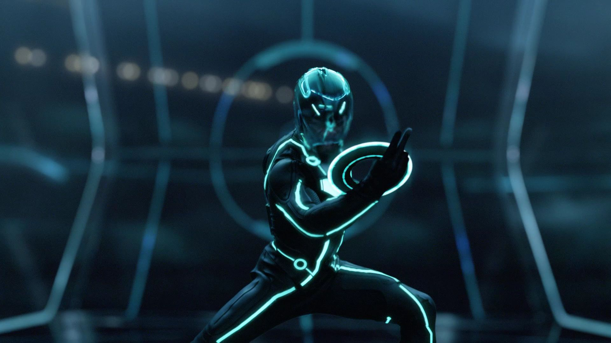

Extended thoughts on "Tron: Legacy" and the film community
Just to preface, this is a sort of post-review-review, my original thoughts on Tron: Legacy can be found here on Letterboxd.
I'm sorta finding it a bit strange. Looking back at how much I cared about justifying my enjoyment. I would hop on review sites and get ready as if I was prepping for some debate that I would never be invited to. For some reason, there's this sort of "shame" that that comes with enjoying a movie that has obvious flaws. It's like that enjoyment has to be earned or explained. Doesn't really make sense. But now that I've sat with it, I don't think I care too much anymore.
I really enjoyed this movie. As I've iterated in my review, this movie makes me feel all giddy inside. I wanna be in the grid so bad. Maybe that says something about how I feel about my life. I don't really know (its not that deep bro).
I think my favorite scene in the movie has to be the air chase. The score is out of this world, it genuinely might be my favorite ever. Like no joke, I'm getting goosebumps right now listening to it. The effects are so nutty, and I love the way the camera pans around the scene. Cinematography is a thing. I'm not sure if I've ever seen a Disney movie with this much depth of field.
I wanna take a quick second to talk about Jeff bridges. He's surprisingly solid in this movie? I wasn't familiar with any of his previous roles, but this performance has definitely made me a fan, I'm gonna keep my eye out for him. Piggybacking off of this, apparently he's a part of the main cast in Tron: Ares (2025). I saw the trailer for it a few times while waiting in previews for a few other movies in theaters, but I hadn't given it too much thought. Oh but now? Now I'm patiently awaiting that October 10th release.
Circling back on what it means to really enjoy something, I think people over-index on critique. Yes, of course there's room for it, but sometimes we miss the forest for the trees. Enjoying movies isn't really about being right, it's not about taste, it's about what it gives you in that moment. And if you're lucky, it gives you something worth remembering.
On that point, I want to really quickly offer my sincere condolences to everyone who was involved in the production of Roadhouse (2024). Before I say what I'm about to say, I want to make it clear, I think by all objective metrics and standards, and by the majorities subjective opinion, this movie was execrable. I'm not just saying it's bad, I'm saying I think it's a shame that this movie was ever conceptualized. And I made this pretty clear in my review of the film.
But, honestly looking back, I enjoyed the experience watching the movie. It's a sort of, "its so bad its kinda good" thing, if that makes sense. Experiencing something so egregiously bad with someone close to you (my older brother in this instance) can actually be a lot of fun! You both have a common distaste towards something, and so throughout the runtime of the movie, we couldn't help but laugh at how bad it was. It ended up becoming an experience that I'll never forget, thats something I can't say about "objectively" good movies.
"I fight for the users" might be top 3 tuffest lines in cinema.